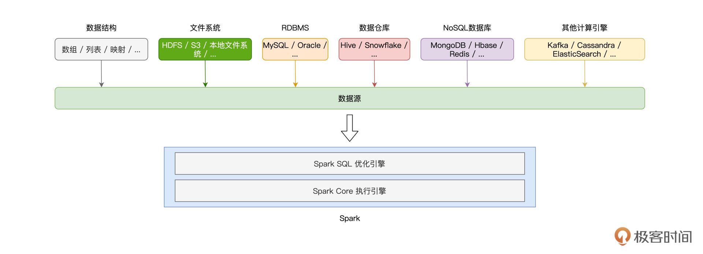
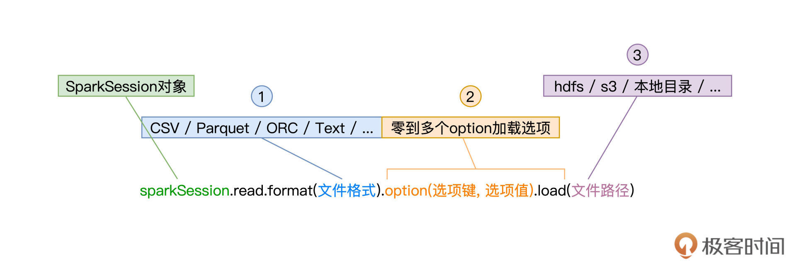
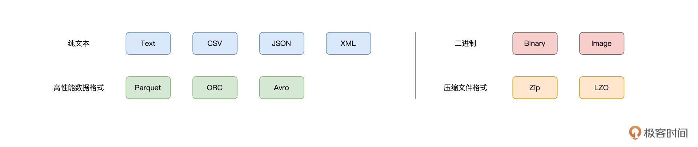
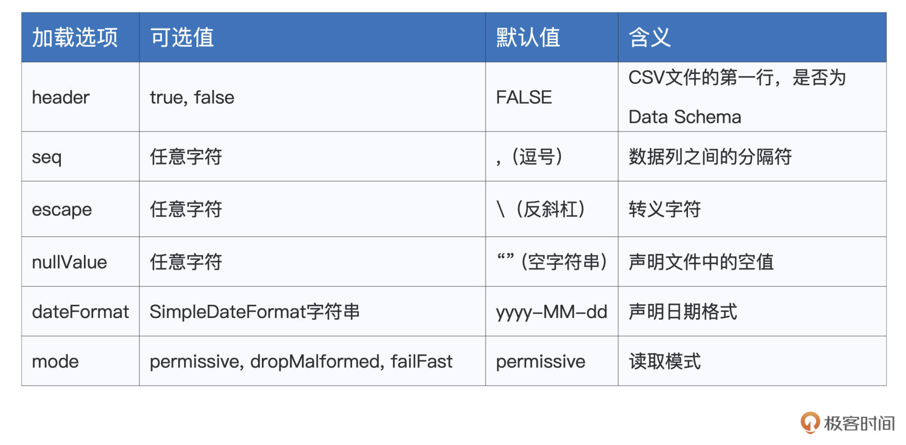
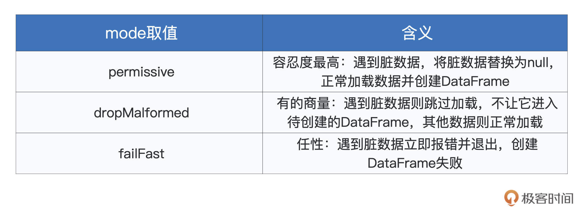
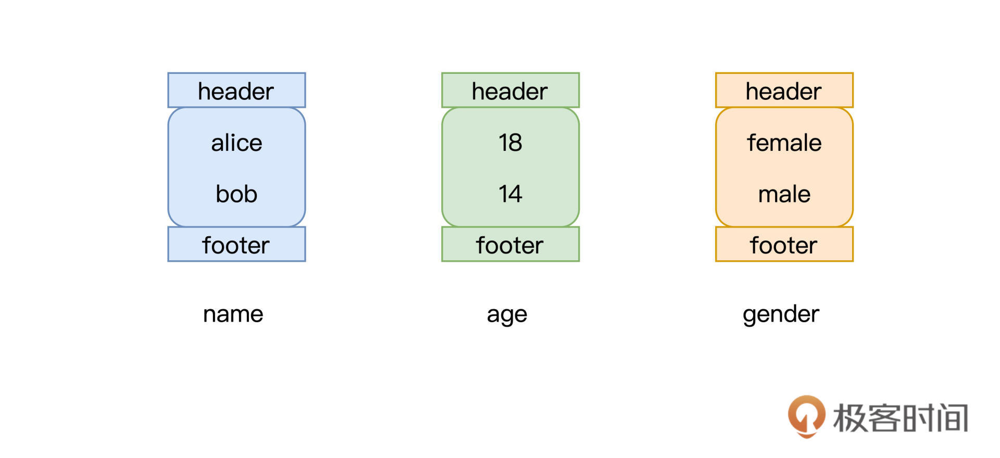

- 00 开篇词 入门Spark，你需要学会“三步走”.md.html
- 01 Spark：从“大数据的Hello World”开始.md.html
- 02 RDD与编程模型：延迟计算是怎么回事？.md.html
- 03 RDD常用算子（一）：RDD内部的数据转换.md.html
- 04 进程模型与分布式部署：分布式计算是怎么回事？.md.html
- 05 调度系统：如何把握分布式计算的精髓？.md.html
- 06 Shuffle管理：为什么Shuffle是性能瓶颈？.md.html
- 07 RDD常用算子（二）：Spark如何实现数据聚合？.md.html
- 08 内存管理：Spark如何使用内存？.md.html
- 09 RDD常用算子（三）：数据的准备、重分布与持久化.md.html
- 10 广播变量 & 累加器：共享变量是用来做什么的？.md.html
- 11 存储系统：数据到底都存哪儿了？.md.html
- 12 基础配置详解：哪些参数会影响应用程序稳定性？.md.html
- 13 Spark SQL：让我们从“小汽车摇号分析”开始.md.html
- 14 台前幕后：DataFrame与Spark SQL的由来.md.html
- 15 数据源与数据格式：DataFrame从何而来？.md.html
- 16 数据转换：如何在DataFrame之上做数据处理？.md.html
- 17 数据关联：不同的关联形式与实现机制该怎么选？.md.html
- 18 数据关联优化：都有哪些Join策略，开发者该如何取舍？.md.html
- 19 配置项详解：哪些参数会影响应用程序执行性能？.md.html
- 20 Hive + Spark强强联合：分布式数仓的不二之选.md.html
- 21 Spark UI（上）：如何高效地定位性能问题？.md.html
- 22 Spark UI（下）：如何高效地定位性能问题？.md.html
- 23 Spark MLlib：从“房价预测”开始.md.html
- 24 特征工程（上）：有哪些常用的特征处理函数？.md.html
- 25 特征工程（下）：有哪些常用的特征处理函数？.md.html
- 26 模型训练（上）：决策树系列算法详解.md.html
- 27 模型训练（中）：回归、分类和聚类算法详解.md.html
- 28 模型训练（下）：协同过滤与频繁项集算法详解.md.html
- 29 Spark MLlib Pipeline：高效开发机器学习应用.md.html
- 30 Structured Streaming：从“流动的Word Count”开始.md.html
- 31 新一代流处理框架：Batch mode和Continuous mode哪家强？.md.html
- 32 Window操作&Watermark：流处理引擎提供了哪些优秀机制？.md.html
- 33 流计算中的数据关联：流与流、流与批.md.html
- 34 Spark + Kafka：流计算中的“万金油”.md.html
- 用户故事 小王：保持空杯心态，不做井底之蛙.md.html
- 结束语 进入时间裂缝，持续学习.md.html
- 捐赠
15 数据源与数据格式：DataFrame从何而来？
你好，我是吴磊。
在上一讲，我们重点讲解了DataFrame与Spark SQL的渊源，并提到，DataFrame是Spark SQL的重要入口。换句话说，通过创建DataFrame并沿用DataFrame开发API，我们才能充分利用Spark SQL优化引擎提供种种“性能红利”。显然，对于初学者来说，第一步的创建DataFrame就变得至关重要。
之前 [第13讲]，我们做小汽车摇号倍率分析时，用了SparkSession的read API从Parquet文件创建DataFrame，其实创建DataFrame的方法还有很多。毫不夸张地说，DataFrame的创建途径异常丰富，为什么这么说呢？
如下图所示，Spark支持多种数据源，按照数据来源进行划分，这些数据源可以分为如下几个大类：Driver端自定义的数据结构、（分布式）文件系统、关系型数据库RDBMS、关系型数据仓库、NoSQL数据库，以及其他的计算引擎。

显然，要深入地介绍Spark与每一种数据源的集成并不现实，也没必要，咱们只需要把注意力放在那些最常用、最常见的集成方式即可。
这一讲，我会从Driver、文件系统与RDBMS三个方面，为你讲解5种常见的DataFrame创建方式，然后带你了解不同方式的使用场景跟优劣分析。
从Driver创建DataFrame
在Driver端，Spark可以直接从数组、元组、映射等数据结构创建DataFrame。使用这种方式创建的DataFrame通常数据量有限，因此这样的DataFrame往往不直接参与分布式计算，而是用于辅助计算或是数据探索。尽管如此，学习这部分知识点还是非常必要的，因为它可以帮我们更直观地理解DataFrame与RDD的关系。
还记得吗？在数据表示（Data Representation）上，相比RDD，DataFrame仅仅是多了一个Schema。甚至可以说，DataFrame就是带Schema的RDD。因此，创建DataFrame的第一种方法，就是先创建RDD，然后再给它“扣上”一顶Schema的“帽子”。
从本地数据结构创建RDD，我们用的是SparkContext的parallelize方法，而给RDD“扣帽子”，我们要用到SparkSession的createDataFrame方法。
createDataFrame方法
为了创建RDD，我们先来定义列表数据seq。seq的每个元素都是二元元组，元组第一个元素的类型是String，第二个元素的类型是Int。有了列表数据结构，接下来我们创建RDD，如下所示。
import org.apache.spark.rdd.RDD
val seq: Seq[(String, Int)] = Seq(("Bob", 14), ("Alice", 18))
val rdd: RDD[(String, Int)] = sc.parallelize(seq)
有了RDD之后，我们来给它制作一顶“帽子”，也就是我们刚刚说的Schema。创建Schema，我们需要用到Spark SQL内置的几种类型，如StructType、StructField、StringType、IntegerType，等等。
其中，StructType用于定义并封装Schema，StructFiled用于定义Schema中的每一个字段，包括字段名、字段类型，而像StringType、IntegerType这些*Type类型，表示的正是字段类型。为了和RDD数据类型保持一致，Schema对应的元素类型应该是（StringType，IntegerType）。
import org.apache.spark.sql.types.{StringType, IntegerType, StructField, StructType}
val schema:StructType = StructType( Array(
StructField("name", StringType),
StructField("age", IntegerType)
))
好啦，到此为止，我们有了RDD，也有了为它量身定做的“帽子”Schema。不过，在把帽子扣上去之前，我们还要先给RDD整理下“发型”。这是什么意思呢？
createDataFrame方法有两个形参，第一个参数正是RDD，第二个参数是Schema。createDataFrame要求RDD的类型必须是RDD[Row]，其中的Row是org.apache.spark.sql.Row，因此，对于类型为RDD[(String, Int)]的rdd，我们需要把它转换为RDD[Row]。
import org.apache.spark.sql.Row
val rowRDD: RDD[Row] = rdd.map(fileds => Row(fileds._1, fileds._2))
“发型”整理好之后，我们就可以调用createDataFrame来创建DataFrame，代码如下所示。
import org.apache.spark.sql.DataFrame
val dataFrame: DataFrame = spark.createDataFrame(rowRDD,schema)
DataFrame创建好之后，别忘了验证它的可用性，我们可以通过调用show方法来做简单的数据探索，验证DataFrame创建是否成功。
dataFrame.show
/** 结果显示
+----+---+
| name| age|
+----+---+
| Bob| 14|
| Alice| 18|
+----+---+
*/
历尽千辛万苦，我们先是用Driver端数据结构创建RDD，然后再调用createDataFrame把RDD转化为DataFrame。你可能会说：“相比用parallelize创建RDD，用createDataFrame创建DataFrame的方法未免复杂了些，有没有更简便的方法呢？”我们接着往下看。
toDF方法
其实要把RDD转化为DataFrame，我们并不一定非要亲自制作Schema这顶帽子，还可以直接在RDD之后调用toDF方法来做到这一点。咱们先来看toDF函数的用法，然后再去分析，spark.implicits是如何帮我们轻松创建DataFrame的。
import spark.implicits._
val dataFrame: DataFrame = rdd.toDF
dataFrame.printSchema
/** Schema显示
root
|-- _1: string (nullable = true)
|-- _2: integer (nullable = false)
*/
可以看到，我们显示导入了spark.implicits包中的所有方法，然后通过在RDD之上调用toDF就能轻松创建DataFrame。实际上，利用spark.implicits，我们甚至可以跳过创建RDD这一步，直接通过seq列表来创建DataFrame。
import spark.implicits._
val dataFrame: DataFrame = seq.toDF
dataFrame.printSchema
/** Schema显示
root
|-- _1: string (nullable = true)
|-- _2: integer (nullable = false)
*/
是不是感觉这个方法很简洁、很轻松？不过，你可能会问：“既然有toDF这条捷径，一开始干嘛还要花功夫去学步骤繁琐的createDataFrame方法呢？”
网络上流行过这么一句话：“你的岁月静好，是有人在背后帮你负重前行。”toDF也是同样的道理，我们之所以能用toDF轻松创建DataFrame，关键在于spark.implicits这个包提供了各种隐式方法。
隐式方法是Scala语言中一类特殊的函数，这类函数不需要开发者显示调用，函数体中的计算逻辑在适当的时候会自动触发。正是它们在背后默默地帮我们用seq创建出RDD，再用createDataFrame方法把RDD转化为DataFrame。
从文件系统创建DataFrame
说完第一类数据源，接下来，我们再来看看Spark如何从文件系统创建DataFrame。
Spark支持多种文件系统，常见的有HDFS、Amazon S3、本地文件系统，等等。不过无论哪种文件系统，Spark都要通过SparkSession的read API来读取数据并创建DataFrame。所以接下来，我们需要先弄明白read API要怎样使用，都有哪些注意事项。
read API由SparkSession提供，它允许开发者以统一的形式来创建DataFrame，如下图所示。

可以看到，要使用read API创建DataFrame，开发者只需要调用SparkSession的read方法，同时提供3类参数即可。这3类参数分别是文件格式、加载选项和文件路径，它们分别由函数format、option和load来指定。
先来看第1类参数文件格式，它就是文件的存储格式，如CSV（Comma Separated Values）、Text、Parquet、ORC、JSON。Spark SQL支持种类丰富的文件格式，除了这里列出的几个例子外，Spark SQL还支持像Zip压缩文件、甚至是图片Image格式。
完整的格式支持，你可以参考下图，或是访问官网给出的列表。在后续的讲解中，我们还会挑选一些常用的数据格式来演示read API的具体用法。

文件格式决定了第2类参数加载选项的可选集合，也就是说，不同的数据格式，可用的选型有所不同。比如，CSV文件格式可以通过option(“header”, true)，来表明CSV文件的首行为Data Schema，但其他文件格式就没有这个选型。之后讲到常见文件格式用法时，我们再对其加载选项做具体讲解。
值得一提的是，加载选项可以有零个或是多个，当需要指定多个选项时，我们可以用“option(选项1, 值1).option(选项2, 值2)”的方式来实现。
read API的第3类参数是文件路径，这个参数很好理解，它就是文件系统上的文件定位符。比如本地文件系统中的“/dataSources/wikiOfSpark.txt”，HDFS分布式文件系统中的“hdfs://hostname:port/myFiles/userProfiles.csv”，或是Amazon S3上的“s3://myBucket/myProject/myFiles/results.parquet”，等等。
了解了read API的一般用法之后，接下来，我们结合一些常见的数据格式，来进行举例说明。对于那些在这节课没有展开介绍的文件格式，你可以参考官网给出的用法来做开发。
从CSV创建DataFrame
以可读性好的纯文本方式来存储结构化数据，CSV文件格式的身影常见于数据探索、数据分析、机器学习等应用场景。经过上面的分析，我们知道，要从CSV文件成功地创建DataFrame，关键在于了解并熟悉与之有关的加载选项。那么我们就来看看，CSV格式都有哪些对应的option，它们的含义都是什么。

从上往下看，首先是“header”，header的设置值为布尔值，也即true或false，它用于指定CSV文件的首行是否为列名。如果是的话，那么Spark SQL将使用首行的列名来创建DataFrame，否则使用“_c”加序号的方式来命名每一个数据列，比如“_c0”、“_c1”，等等。
对于加载的每一列数据，不论数据列本身的含义是什么，Spark SQL都会将其视为String类型。例如，对于后面这个CSV文件，Spark SQL将“name”和“age”两个字段都视为String类型。
name,age
alice,18
bob,14
import org.apache.spark.sql.DataFrame
val csvFilePath: String = _
val df: DataFrame = spark.read.format("csv").option("header", true).load(csvFilePath)
// df: org.apache.spark.sql.DataFrame = [name: string, age: string]
df.show
/** 结果打印
+-----+---+
| name| age|
+-----+---+
| alice| 18|
| bob| 14|
+-----+---+
*/
要想在加载的过程中，为DataFrame的每一列指定数据类型，我们需要显式地定义Data Schema，并在read API中通过调用schema方法，来将Schema传递给Spark SQL。Data Schema的定义我们讲createDataFrame函数的时候提过，咱们不妨一起来回顾一下。
定义Schema：
import org.apache.spark.sql.types.{StringType, IntegerType, StructField, StructType}
val schema:StructType = StructType( Array(
StructField("name", StringType),
StructField("age", IntegerType)
))
调用schema方法来传递Data Schema：
val csvFilePath: String = _
val df: DataFrame = spark.read.format("csv").schema(schema).option("header", true).load(csvFilePath)
// df: org.apache.spark.sql.DataFrame = [name: string, age: int]
可以看到，在使用schema方法明确了Data Schema以后，数据加载完成之后创建的DataFrame类型由原来的“[name: string, age: string]”，变为“[name: string, age: int]”。需要注意的是，并不是所有文件格式都需要schema方法来指定Data Schema，因此在read API的一般用法中，schema方法并不是必需环节。
好，我们接着说CSV格式的option选项。在“header”之后，第二个选项是“seq”，它是用于分隔列数据的分隔符，可以是任意字符串，默认值是逗号。常见的分隔符还有Tab、“|”，等等。
之后的“escape”和“nullValue”分别用于指定文件中的转义字符和空值，而“dateFormat”则用于指定日期格式，它的设置值是任意可以转换为Java SimpleDateFormat类型的字符串，默认值是“yyyy-MM-dd”。
最后一个选项是“mode”，它用来指定文件的读取模式，更准确地说，它明确了Spark SQL应该如何对待CSV文件中的“脏数据”。
所谓脏数据，它指的是数据值与预期数据类型不符的数据记录。比如说，CSV文件中有一列名为“age”数据，它用于记录用户年龄，数据类型为整型Int。那么显然，age列数据不能出现像“8.5”这样的小数、或是像“8岁”这样的字符串，这里的“8.5”或是“8岁”就是我们常说的脏数据。
在不调用schema方法来显示指定Data Schema的情况下，Spark SQL将所有数据列都看作是String类型。我们不难发现，mode选项的使用，往往会与schema方法的调用如影随形。
mode支持3个取值，分别是permissive、dropMalformed和failFast，它们的含义如下表所示。

可以看到，除了“failFast”模式以外，另外两个模式都不影响DataFrame的创建。以下面的CSV文件为例，要想剔除脏数据，也就是“cassie, six”这条记录，同时正常加载满足类型要求的“干净”数据，我们需要同时结合schema方法与mode选项来实现。
CSV文件内容：
name,age
alice,18
bob,14
cassie, six
调用schema方法来传递Data Schema：
val csvFilePath: String = _
val df: DataFrame = spark.read.format("csv")
.schema(schema)
.option("header", true)
.option("mode", "dropMalformed")
.load(csvFilePath)
// df: org.apache.spark.sql.DataFrame = [name: string, age: int]
df.show
/** 结果打印
+-----+---+
| name| age|
+-----+---+
| alice| 18|
| bob| 14|
+-----+---+
*/
好啦，关于从CSV文件创建DataFrame，我们就讲完了。不难发现，从CSV创建DataFrame，过程相对比较繁琐，开发者需要注意的细节也很多。不过，毕竟CSV简单直接、跨平台、可读性好、应用广泛，因此掌握这部分开发技巧，还是非常值得的。
从Parquet / ORC创建DataFrame
接下来，我们就来说说Parquet格式和ORC格式，相比从CSV创建DataFrame，这两个方法就没那么麻烦了。
Parquet与ORC，都是应用广泛的列存（Column-based Store）文件格式。顾名思义，列存，是相对行存（Row-based Store）而言的。
在传统的行存文件格式中，数据记录以行为单位进行存储。虽然这非常符合人类的直觉，但在数据的检索与扫描方面，行存数据往往效率低下。例如，在数据探索、数据分析等数仓应用场景中，我们往往仅需扫描数据记录的某些字段，但在行存模式下，我们必须要扫描全量数据，才能完成字段的过滤。
CSV就是典型的行存数据格式，以如下的内容为例，如果我们想要统计文件中女生的数量，那么我们不得不扫描每一行数据，判断gender的取值，然后才能决定是否让当前记录参与计数。
CSV文件内容：
name,age,gender
alice,18,female
bob,14,male
列存文件则不同，它以列为单位，对数据进行存储，每一列都有单独的文件或是文件块。还是以上面的文件内容为例，如果采用列存格式的话，那么文件的存储方式将会变成下面的样子。

可以看到，数据按列存储，想要统计女生的数量，我们只需扫描gender列的数据文件，而不必扫描name与age字段的数据文件。相比行存，列存有利于大幅削减数据扫描所需的文件数量。
不仅如此，对于每一个列存文件或是文件块，列存格式往往会附加header和footer等数据结构，来记录列数据的统计信息，比如最大值、最小值、记录统计个数，等等。这些统计信息会进一步帮助提升数据访问效率，例如，对于max=“male”同时min=“male”的gender文件来说，在统计女生计数的时候，我们完全可以把这样的文件跳过，不进行扫描。
再者，很多列存格式往往在文件中记录Data Schema，比如Parquet和ORC，它们会利用Meta Data数据结构，来记录所存储数据的数据模式。这样一来，在读取类似列存文件时，我们无需再像读取CSV一样，去手工指定Data Schema，这些繁琐的步骤都可以省去。因此，使用read API来读取Parquet或是ORC文件，就会变得非常轻松，如下所示。
使用read API读取Parquet文件：
val parquetFilePath: String = _
val df: DataFrame = spark.read.format("parquet").load(parquetFilePath)
使用read API读取ORC文件：
val orcFilePath: String = _
val df: DataFrame = spark.read.format("orc").load(orcFilePath)
可以看到，在read API的用法中，我们甚至不需要指定任何option，只要有format和load这两个必需环节即可。是不是非常简单？
好啦，到此为止，我们梳理了如何从文件系统，在不同的数据格式下创建DataFrame。在这一讲的最后，我们再来简单地了解一下如何从关系型数据库创建DataFrame，毕竟，这个场景在我们日常的开发中还是蛮常见的。
从RDBMS创建DataFrame
使用read API读取数据库，就像是使用命令行连接数据库那么简单。而使用命令行连接数据库，我们往往需要通过参数来指定数据库驱动、数据库地址、用户名、密码等关键信息。read API也是一样，只不过，这些参数通通由option选项来指定，以MySQL为例，read API的使用方法如下。
使用read API连接数据库并创建DataFrame：
spark.read.format("jdbc")
.option("driver", "com.mysql.jdbc.Driver")
.option("url", "jdbc:mysql://hostname:port/mysql")
.option("user", "用户名")
.option("password","密码")
.option("numPartitions", 20)
.option("dbtable", "数据表名 ")
.load()
访问数据库，我们同样需要format方法来指定“数据源格式”，这里的关键字是“jdbc”。请注意，由于数据库URL通过option来指定，因此调用load方法不再需要传入“文件路径”，我们重点来关注option选项的设置。
与命令行一样，option选项同样需要driver、url、user、password这些参数，来指定数据库连接的常规设置。不过，毕竟调用read API的目的是创建DataFrame，因此，我们还需要指定“dbtable”选项来确定要访问哪个数据表。
有意思的是，除了将表名赋值给“dbtable”以外，我们还可以把任意的SQL查询语句赋值给该选项，这样在数据加载的过程中就能完成数据过滤，提升访问效率。例如，我们想从users表选出所有的女生数据，然后在其上创建DataFrame。
val sqlQuery: String = “select * from users where gender = ‘female’”
spark.read.format("jdbc")
.option("driver", "com.mysql.jdbc.Driver")
.option("url", "jdbc:mysql://hostname:port/mysql")
.option("user", "用户名")
.option("password","密码")
.option("numPartitions", 20)
.option("dbtable", sqlQuery)
.load()
此外，为了提升后续的并行处理效率，我们还可以通过“numPartitions”选项来控制DataFrame的并行度，也即DataFrame的Partitions数量。
需要额外注意的是，在默认情况下，Spark安装目录并没有提供与数据库连接有关的任何Jar包，因此，对于想要访问的数据库，不论是MySQL、PostgreSQL，还是Oracle、DB2，我们都需要把相关Jar包手工拷贝到Spark安装目录下的Jars文件夹。与此同时，我们还要在spark-shell命令或是spark-submit中，通过如下两个命令行参数，来告诉Spark相关Jar包的访问地址。
- –driver-class-path mysql-connector-java-version.jar
- –jars mysql-connector-java-version.jar
好啦，到此为止，这一讲的内容就全部讲完啦！今天的内容有点多，我们来一起总结一下。
重点回顾
今天这一讲，我们聚焦在DataFrame的创建方式上。Spark支持种类丰富的数据源与数据格式，我们今天的重点，是通过Driver、文件系统和关系型数据库，来创建DataFrame。
在Driver端，我们可以使用createDataFrame方法来创建DataFrame，需要注意的是，这种创建方式有两个前提条件。一是底层RDD的类型必须是RDD[Row]，二是我们需要手工创建Data Schema。Schema的创建需要用到StructType、StructField等数据类型，你要牢记在心。
import org.apache.spark.sql.types.{StringType, IntegerType, StructField, StructType}
val schema:StructType = StructType( Array(
StructField("name", StringType),
StructField("age", IntegerType)
))
除了这种比较繁琐的方式之外，我们还可以利用spark.implicits._提供的隐式方法，通过在RDD或是原始序列数据之上调用toDF方法，轻松创建DataFrame。
接着，使用SparkSession的read API，我们分别讲解了从CSV、Parquet、ORC和关系型数据库创建DataFrame的一般方法。read API调用的一般方法，需要你熟练掌握。
由于Parquet、ORC这类列存格式在文件中内置了Data Schema，因此，访问这类文件格式，只有format和load两个方法是必需的。
相比之下，读取CSV较为复杂。首先，为了指定Data Schema，开发者需要额外通过schema方法，来输入预定义的数据模式。再者，CSV的option选项比较多，你可以参考后面的表格，来更好地控制CSV数据的加载过程。
最后，我们学习了read API访问RDBMS的一般方法。与命令行的访问方式类似，你需要通过多个option选项，来指定数据库连接所必需的访问参数，如数据库驱动、URL地址、用户名、密码，等等。特别地，你还可以为“dbtable”选项指定表名或是查询语句，对数据的加载过程进行干预和控制。
每课一练
给定如下CSV文件，请你分别使用permissive, dropMalformed, failFast这3种mode，对比read API所创建的DataFrame之间的区别。
name,age
alice,18
bob,14
cassie, six
欢迎你在留言区跟我交流活动，也推荐你把这一讲的内容分享给更多的同事、朋友，跟他一起学习进步。
© 2019 - 2023 Liangliang Lee. Powered by gin and hexo-theme-book.